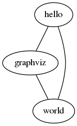
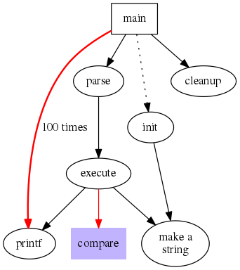
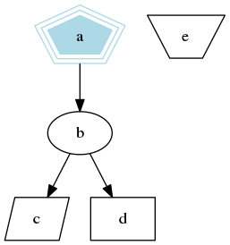
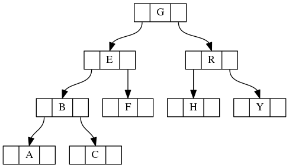
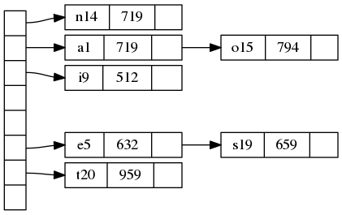
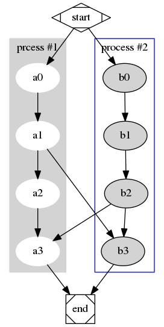

Fast into Graphviz
March 20, 2017
graphviz techGraphviz - Graph Visualization Software 由 AT&T 出品， 是一种结构化信息的可视化方式，也是一套开放源代码软件，可以被广泛地使用于网络拓扑、软件工程、数据库设计、机器学习等方向的图表展示。
Graphviz 1.2D 及之前的版本使用了 AT&T 代码许可证 (the AT&T Source Code Agreement)，之后的版本使用了EPL (The Eclipse Public License) 。
Graphviz 是一款面向程序员的绘图软件，不仅体现在其设计和使用方式上，还体现在其文档上 :)
Demos
Hello world
新建一个文本文件 a.dot 。
graph start {
hello -- {graphviz world};
graphviz -- world
}
运行 dot -Tpng a.dot -o a.png
得到：

程序调用
新建一个文本文件 b.dot 。
digraph Invoke {
size = "4, 4";// 图片大小
main[shape=box];/* 形状 */
main->parse;
parse->execute;
main->init[style = dotted];// 虚线
main->cleanup;
execute->{make_string; printf}// 连接两个
init->make_string;
edge[color = red]; // 连接线的颜色
main->printf[style=bold, label="100 times"];// 线的 label
make_string[label = "make a\nstring"]// \n, 这个node的label，注意和上一行的区别
node[shape = box, style = filled, color = ".7.3 1.0"];// 一个node的属性
execute->compare;
}
运行 dot -Tpng b.dot -o b.png
得到：

节点形状
新建一个文本文件 c.dot 。
digraph node_shape {
size = "4, 4"
a->b->c;
b->d;
a[shape = polygon, sides = 5, peripheries=3, color = lightblue, style = filled];
c[shape = polygon, sides = 4, skew= 0.4, lable = "hello world"];
d[shape = rect];
e[shape = polygon, side = 4, distortion = .7];
}
运行 dot -Tpng c.dot -o c.png
得到：

数据结构
新建一个文本文件 d.dot 。
digraph data_struct {
node [shape = record, height=.1]; // 全局样式;
node0[label = "<f0> |<f1> G|<f2> "];
node1[label = "<f0> |<f1> E|<f2> "];
node2[label = "<f0> |<f1> B|<f2> "];
node3[label = "<f0> |<f1> F|<f2> "];
node4[label = "<f0> |<f1> R|<f2> "];
node5[label = "<f0> |<f1> H|<f2> "];
node6[label = "<f0> |<f1> Y|<f2> "];
node7[label = "<f0> |<f1> A|<f2> "];
node8[label = "<f0> |<f1> C|<f2> "];
"node0":f2 -> "node4":f1;
"node0":f0 -> "node1":f1;
"node1":f0 -> "node2":f1;
"node1":f2 -> "node3":f1;
"node2":f2 -> "node8":f1;
"node2":f0 -> "node7":f1;
"node4":f2 -> "node6":f1;
"node4":f0 -> "node5":f1;
}
运行 dot -Tpng d.dot -o d.png
得到：

Hash table
新建一个文本文件 e.dot 。
digraph hash_table {
nodesep = .05;
rankdir = LR;
node[shape = record, width = .1, height = .1];
node0[label = "<f0> |<f1> |<f2> |<f3> |<f4> |<f5> |<f6> |", height = 2.5];
node [width = 1.5];
node1[label = "{<n> n14 | 719 |<p>}"];
node2[label = "{<n> a1 | 719 |<p>}"];
node3[label = "{<n> i9 | 512 |<p>}"];
node4[label = "{<n> e5 | 632 |<p>}"];
node5[label = "{<n> t20 | 959 |<p>}"];
node6[label = "{<n> o15 | 794 |<p>}"];
node7[label = "{<n> s19 | 659 |<p>}"];
node0:f0 -> node1:n;
node0:f1 -> node2:n;
node0:f2 -> node3:n;
node0:f5 -> node4:n;
node0:f6 -> node5:n;
node2:p -> node6:n;
node4:p -> node7:n;
}
运行 dot -Tpng e.dot -o e.png
得到：

流程图
新建一个文本文件 f.dot 。
digraph work_flow {
subgraph cluster0 {
node[style = filled, color = white];
style = filled;
color = lightgrey;
a0->a1->a2->a3;
label = "prcess #1"
}
subgraph cluster1 {
node[style = filled];
b0->b1->b2->b3;
label = "process #2";
color = blue;
}
start->a0;
start->b0;
a1->b3;
b2->a3;
a3->end;
b3->end;
start[shape=Mdiamond];
end[shape=Msquare];
}
运行 dot -Tpng f.dot -o f.png
得到：

Utilities
- dot : filter for drawing directed graphs
- neato : filter for drawing undirected graphs
- twopi : filter for radial layouts of graphs
- circo : filter for circular layout of graphs
- fdp : filter for drawing undirected graphs
- sfdp : filter for drawing large undirected graphs
- patchwork : filter for tree maps
以上命令工具是同一套代码的wrapper，共享相同的命令行参数:
-Gsets a default graph attribute.-Nsets a default node attribute.-Esets a default edge attribute.-Tlangsets the output language.-Klayoutoverride the default layout engine implied by the command name.-Oautomatically generate output filenames based on the input filename and the -T format.-ooutfilewrites output to file outfile.
常用的输出格式有:
- -Tps (PostScript)
- -Tsvg -Tsvgz (Structured Vector Graphics)
- -Tfig (XFIG graphics)
- -Tpng -Tgif (bitmap graphics)
- -Timap (imagemap files for httpd servers for each node or edge that has a non‐null “href” attribute)
- -Tcmapx (client‐side imagemap for use in html and xhtml)
更多输出格式参见 http://www.graphviz.org/content/output-format 。
DOT Language
Abstract Grammar Definition
官方对DOT语言的语法的描述如下：
graph: [ strict ] (graph | digraph) [ ID ] '{' stmt_list '}'
stmt_list: [ stmt [ ';' ] stmt_list ]
stmt: node_stmt | edge_stmt | attr_stmt | ID '=' ID | subgraph
attr_stmt: (graph | node | edge) attr_list
attr_list: '[' [ a_list ] ']' [ attr_list ]
a_list: ID '=' ID [ (';' | ',') ] [ a_list ]
edge_stmt: (node_id | subgraph) edgeRHS [ attr_list ]
edgeRHS: edgeop (node_id | subgraph) [ edgeRHS ]
node_stmt: node_id [ attr_list ]
node_id: ID [ port ]
port: ': ' ID [ ':' compass_pt ] | ': ' compass_pt
subgraph: [ subgraph [ ID ] ] '{' stmt_list '}'
compass_pt: (n | ne | e | se | s | sw | w | nw | c | _)
具体说明，参见 The DOT Language 。
keywords
DOT 语言里面的关键字是大小写无关的 (node, edge, graph, digraph, subgraph, strict) 。
graph & digraph
一个图由 graph 或者 digraph 关键字定义，后面跟一个可选的图ID，后跟一对大括号 ({, }) 包围的语句块。grpha 是无向图，digraph 是有向图。
ID
图ID是一个常规的字符串，可以由一个可选的双引号包围起来；如果要使用关键字作为ID，则必须要用双引号；图ID字符串中的字符可以是任意的大小写字符 ([a-zA-Z\200-\377]) ，下划线 (_) 和数字 ([0-9]) ，但不能是以数字开头；图ID也可以是有效的数字 ([-]?(.[0-9]+ | [0-9]+(.[0-9]*)? )) ；图ID也可以是有效的HTML串。
stmt
语句是可以是节点定义语句 (node_stmt) 、边定义语句 (edge_stmt) 、属性定义语句 (attr_stmt) 或者子图定义语句 (subgraph) 。
在 graph 中，需要用 -- 操作符来定义一条边；在 digraph 中，需要用 -> 操作符来定义一条边。
两个语句之间可以用一个可选的 ; 分隔。
subgraph
子图可以用来对节点和边进行分组。
A -> {B C}
子图也可以用来批量设置属性。
subgraph {
rank = same; A; B; C;
}
子图也可以用来指定布局引擎。如果子图ID以 “cluster” 开始，则该子图会被布局引擎作为特殊的集聚图来对待。
strict
如果使用了 strict
关键字，则图中一个起点一个终点之间最多生成一条边。在无向图中，两个点之间最多一条边；在有向图中，两个点之间最多两条边，并且方向相反。
attrs
属性可以是特定于节点或者边的，也可以是特定于图的。多个属性之间由空格分隔，也可以有可选的 ; 或者 , 。
name=val;: 图属性node [name=val];: 节点属性edge [name=val];: 边属性
详细说明，参见 Graphviz attrs 。